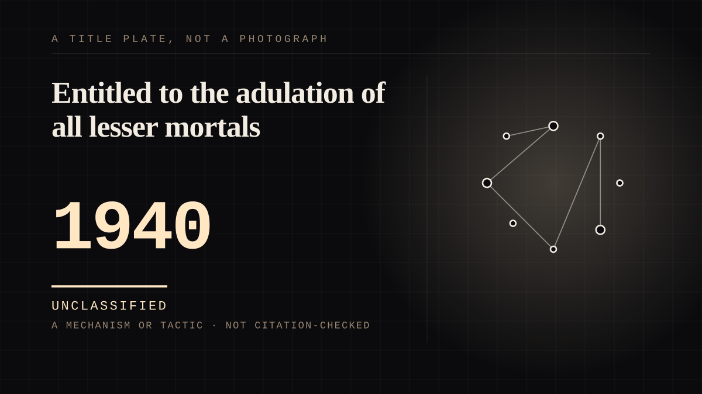

A mechanism or tactic · 1940 · Fandom
Entitled to the adulation of all lesser mortals
A children's comic club that awarded membership badges, and whose membership card was authorised by a character.

The club exists so that a printed figure will appear to be writing to a child personally, and the child does the work. Captain Marvel debuted on the cover of Whiz Comics #2, cover-dated February 1940, drawn by C. C. Beck from a script by Bill Parker under executive editor Wilford H. Fawcett - and the issue carried an offer: send in a code and receive a membership certificate, a membership card with your own code number, and a plastic Captain Marvel ring. The code was printed in the comic. Every member had to decode the message themselves. So the near side performed the decoding, and the impression of a secret channel was manufactured out of materials the far side printed. That is the part of this arrangement nobody writes about, and it is why this is an entry rather than a footnote to the Golden Age: the parasocial bond was assembled by the person who was attached.
And the membership card was authorised by a character, which is the purest simulated reciprocity on this site. The card's authorised wording reads: "Is a charter member in good standing of The Merry Marvel Marching Society And is thereby entitled to the adulation and admiration of all lesser mortals!" - and it was issued under "the actual authority of Benj J. Grimm, Grand Marshal (pro tem)". Grimm is the Thing. The institution signed as a character, so that a reply from a publisher would arrive with a fictional officer's signature on it and appear to come from inside the fiction rather than from a business. The card also declared that "these privileges are non-transferable", which is a reminder that the thing being sold was a status rather than an access.
The adjacent clubs are the evidence that the signature was a choice.
Dell ran a comics club whose certificate was authorised by G. T. Delacorte Jr., an actual person; Little Orphan Annie ran a code badge that in one account a boy waited anxiously for; E. C. began "to build a mailing list of fans willing to pay to belong to its fan club to get news of upcoming issues." Four publishers, four devices, and the one that put a character in the signature is the one whose reply would read as coming from inside the story. Nobody was deceived and nothing was fraudulent - the certificate said what it was - but a child holding a card signed by the Grand Marshal is holding something the adult in the shop never was.
This is the first named instance of the cog register, and it satisfies all three conditions the register asks for at once. The far end has its own machinery: this was a premium scheme, and "Bargain X" offered America's Greatest Comics #2, Gene Autry Comics #2, Minute Man Comics #3 and "a color picture of Spy Smasher for a quarter". Every member is one working part of a sales device aimed at their parents' pocket. And every member has their own machinery - the decoding. None of the children built it, and the register's test is whether seeing the whole machine would change the attachment. It would not. Seeing that the cipher was printed in the page does not make a reader stop being a reader. That is the register's whole content: "A cog that can see the machine is still a cog." Until this entry the register had a definition, a test and no instance, and a definition with nothing behind it prints on the taxonomy page as though it were a finding.
The club was also promoted by a film, which closes the circle with this site's own argument. The club was pushed by an actual feature, Frank Tashlin's Good Humor Man (1950), plus a Fawcett special issue - so a membership in a fictional boy's club was sold through a feature film, on a screen, to children who had never met the publishers who were writing to them.
The commercial ending runs the other way from the usual story.
Marvel's fan clubs and their premiums "evolved, eventually culminating in a full-fledged kit for Wild Agents of Marvel before being discarded as a potential profit center." So the apparatus was retired because it did not pay - the bond outlived the business plan, rather than the other way round, which is the reverse of how parasocial attachment is usually written and is why the register exists.
What the figures around it were worth.
Whiz Comics ran from February 1940 to June 1953, 155 issues, and Captain Marvel's sales "surpass[ed] that of DC stalwarts like Batman and Superman"; he was the first superhero to appear on film. Then DC sued Fawcett in 1941 alleging the character violated its intellectual property, and the case took twelve years to resolve, with Fawcett paying $400,000 and ceasing publication of all Captain Marvel material, which ended the thirteen-year run. The far end of this tie was not merely silent or withdrawn; it was legally removed, and the club members had no say in it. That is the one hard fact in the entry that no club's own literature would tell you.
A weakness in this entry's own sourcing, recorded rather than hidden.
The publication facts are solid and double-sourced - Whiz Comics #2's publisher, cover artist, writer and editor, the run dates, the lawsuit and the damages all come from Wikipedia and DC Database. The artefacts - the certificate wording, the Grimm signature, the plastic ring, the decoding - rest on two weaker records: a Comic-Con programme newsletter and a fan site that has recreated the code card. A club that awarded a plastic ring is exactly the sort of thing remembered differently by different people, which is why the wording above is quoted wherever a quote exists and paraphrased nowhere. If this entry is ever stood behind, the artefacts are the part to stand behind.
Same story, 4 other entries
The fan club1950 → The reply that was printed1962 → The supermarket club1982 → The narrator is Tyler Durden, and he is not told1999
Where it sits
1900 1900-1949 · 1940 1949
Provenance · 4 source record(s)
- retrievableThe publication record and the commercial stakes, all of which are solid. An anthology comic published by Fawcett Publications "between February 1940 until June 1953", 155 issues, main character Captain Marvel; that "The first issue published of Whiz Comics was issue #2, published with a cover-date of Feb. 1940", cover art by C. C. Beck, and that #2 "unofficially became" #1 because two issues of #3 followed; that "Captain Marvel continued to be the star attraction of Whiz Comics, with his sales surpassing that of DC stalwarts like Batman (Detective Comics and Batman) and Superman (Action Comics and Superman)"; that he was "the first superhero to appear on film"; and the litigation: "In 1941, DC sued Fawcett Publications, alleging that Captain Marvel was so similar to Superman as to violate DC's intellectual property rights. The lawsuit took 12 years to resolve, with Fawcett having to pay $400,000 in damages and cease publication of all Captain Marvel-related material. This ended the 13-year run of Whiz Comics." Also that the name 'Captain Marvel' was trademarked by Marvel Comics and that DC bought the creative rights in 1972.Wikipedia, "Whiz Comics" ↗
- retrievableThe credits, read off the book's own indicia rather than from memory. Cover date February 1940; Publisher Fawcett Publications; Executive Editor Wilford H. Fawcett; Cover Artists C. C. Beck; Writers Bill Parker; Pencilers and Inkers C. C. Beck. Also the incantation as printed - "By speaking my name you can become the strongest and mightiest man in the world - Captain Marvel!" - and the copyright note that "All characters and likeness(es) thereof associated with the Captain Marvel family of titles became the legal property of National Periodical Publications (DC Comics) in 1991". A fan-edited wiki, so it is used for the credits and the printed line rather than for interpretation, and the publication facts are corroborated by Wikipedia.DC Database, "Whiz Comics Vol 1 2" (Fandom) ↗
- retrievableThe club itself, which is the entry's spine and its weakest source - recorded as a newsletter column, not a peer-reviewed or archival record. That Fawcett "had pushed its Captain Marvel Club with energy, including a newsletter and information on more 'swell premiums'", with "Bargain X" bringing America's Greatest Comics #2, Gene Autry Comics #2, Minute Man Comics #3, and a color picture of Spy Smasher for a quarter. The membership card: "The membership card ('these privileges are non-transferable') stated that the typed 'authorized signature', 'Is a charter member in good standing of The Merry Marvel Marching Society And is thereby entitled to the adulation and admiration of all lesser morals!' Whereas the Dell Comics Club certificate was authorized by G.T. Delacorte, Jr., the M.M.M.S. card was issued under the actual authority of Benj J. Grimm, Grand Marshal (pro tem).'" Also the adjacent clubs - Little Orphan Annie's code badge, which Ralph Parker "had waited anxiously for" and which required only subscribing to a Dell series; E. C. building "a mailing list of fans willing to pay to belong to its fan club"; and "Marvel's fan clubs and its premiums evolved, eventually culminating in a full-fledged kit for Wild Agents of Marvel before being discarded as a potential profit center". And that the club "was promoted, by the way, by an actual feature film - Frank Tashlin's Good Humor Man of 1950 - and a spin-off Fawcett special issue."Maggie's World 041: QLRM GSV XOFY!, Toucan (San Diego Comic-Con programme archive), 9 January 2024 ↗
- retrievableThe decoding, and the weakest record in the entry - a fan-run site, used only for the mechanism and not for any fact a historian would dispute. "Captain Marvel Club members of the 1940s were able to decode secret messages from the Captain. The card has been recreated on this page to allow Captain Marvel Club members to interactively encode and decode messages." That is the whole of the parasocial claim in one sentence, which is why the entry quotes it verbatim rather than paraphrasing, and why the same claim is stated on the entry as resting partly on a fan site.The Marvel Family Web, "Fun Stuff!" ↗
CHARACTER The written character
Connected · 2 out, 2 in
It sits in